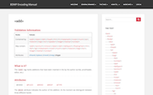
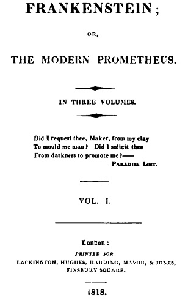

Welcome to the mini digital edition of Mary Shelley's Frankenstein. Made as a project for Text as Data II, taught at the University of Antwerp.
Bodleian MS Abinger c.56
Author(s) Mary Shelley
Date Written [August or September]-[?December] 1816
Title/Literary Work Frankenstein
State draft
Institution Bodleian Library, University of Oxford
Hand(s) Mary Shelley, Percy Shelley
Shelfmark MS. Abinger c. 56
1O pages of chapter 7 from folio 21r to 25v
the xml text is based on the goodwin archive source and annotated ?? based on the bdpm manual


image from Project Gutenberg Frankenstein
Originally published as a three-volume novel on January 1, 1818, Frankenstein had its notorious beginnings as a now lost ur-story written by Mary Wollstonecraft Shelley (MWS) in the summer of 1816, when the Shelleys and Claire Clairmont joined Lord Byron and his physician John Polidori in Cologny, near Geneva. During that historically cold and rainy summer, the group amused themselves during the evenings by reading ghost stories aloud, prompting Byron to propose that they each attempt to write one.
MWS’s own original story and further early drafts are no longer extant. She recast this early work, with the collaboration of Percy B. Shelley (PBS), into the draft of a two-volume novel in 1816-1817. In doing so, she used two notebooks (A and B) whose disbound pages survive as Bodleian MS Abinger c.56 and c.57. Complicating the textual condition of the draft material: the division of pages between Notebooks A and B does not correspond with their disbound form as manuscripts c.56 and c.57
Originally published as a three-volume novel on January 1, 1818, Frankenstein had its notorious beginnings as a now lost ur-story written by Mary Wollstonecraft Shelley (MWS) in the summer of 1816, when the Shelleys and Claire Clairmont joined Lord Byron and his physician John Polidori in Cologny, near Geneva. During that historically cold and rainy summer, the group amused themselves during the evenings by reading ghost stories aloud, prompting Byron to propose that they each attempt to write one.
MWS’s own original story and further early drafts are no longer extant. She recast this early work, with the collaboration of Percy B. Shelley (PBS), into the draft of a two-volume novel in 1816-1817. In doing so, she used two notebooks (A and B) whose disbound pages survive as Bodleian MS Abinger c.56 and c.57. Complicating the textual condition of the draft material: the division of pages between Notebooks A and B does not correspond with their disbound form as manuscripts c.56 and c.57,
Originally published as a three-volume novel on January 1, 1818, Frankenstein had its notorious beginnings as a now lost ur-story written by Mary Wollstonecraft Shelley (MWS) in the summer of 1816, when the Shelleys and Claire Clairmont joined Lord Byron and his physician John Polidori in Cologny, near Geneva. During that historically cold and rainy summer, the group amused themselves during the evenings by reading ghost stories aloud, prompting Byron to propose that they each attempt to write one.
MWS’s own original story and further early drafts are no longer extant. She recast this early work, with the collaboration of Percy B. Shelley (PBS), into the draft of a two-volume novel in 1816-1817. In doing so, she used two notebooks (A and B) whose disbound pages survive as Bodleian MS Abinger c.56 and c.57. Complicating the textual condition of the draft material: the division of pages between Notebooks A and B does not correspond with their disbound form as manuscripts c.56 and c.57,
Originally published as a three-volume novel on January 1, 1818, Frankenstein had its notorious beginnings as a now lost ur-story written by Mary Wollstonecraft Shelley (MWS) in the summer of 1816, when the Shelleys and Claire Clairmont joined Lord Byron and his physician John Polidori in Cologny, near Geneva. During that historically cold and rainy summer, the group amused themselves during the evenings by reading ghost stories aloud, prompting Byron to propose that they each attempt to write one.
Bodleian MS Abinger c.56
Author(s) Mary Shelley
Date Written [August or September]-[?December] 1816
Title/Literary Work Frankenstein
State draft
Institution Bodleian Library, University of Oxford
Hand(s) Mary Shelley, Percy Shelley
Shelfmark MS. Abinger c. 56
Folio 21r
The Shelley-Godwin Archive will provide the digitized manuscripts of Percy Bysshe Shelley, Mary Wollstonecraft Shelley, William Godwin, and Mary Wollstonecraft, bringing together online for the first time ever the widely dispersed handwritten legacy of this uniquely gifted family of writers. The result of a partnership between the New York Public Library and the Maryland Institute for Technology in the Humanities, in cooperation with Oxford’s Bodleian Library